Curse of Naxxramas Bosses
Curse of Naxxramas Bosses
Arachnid Quarter
Anub Rekhan
The Arachnid Quarter houses undead nerubians, an ancient race of intelligent arachnoid beings. Normally highly reclusive and suspicious of outsiders, living nerubians fought valiantly against the undead Scourge, but were overwhelmed by their numbers. While living nerubians were immune to the undead plague, nothing could prevent the Lich King from bringing back the fallen to join the Scourge in undeath. One of the minions raised by the Lich King was the Crypt Lord Anub'Rekhan. In life, he was one of the nerubians’ most powerful lords. Now, he guards the doors of the Arachnid Quarter.
Normal

Heroic

Grand Widow Faerlina
Once one of the high-ranking members of the Cult of the Damned under Kel'Thuzad, in death she breeds and takes care of the seemingly endless amount of arachnids that swarm from the depths of the citadel. A master of poisons, she has a keen understanding of what makes mortals suffer.
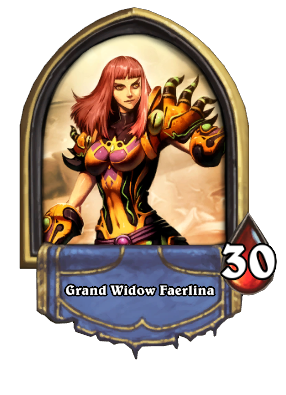
Normal
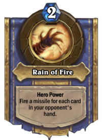
Heroic

Maexxna
Maexxna — born deep within the mountains of Northrend many ages ago, she was captured within the dread citadel Naxxramas, where she gives birth to her brood, feeding them the corpses of all who dare venture too deeply into Naxxramas.
Normal

Heroic
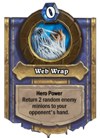
Plague Quarter
Noth the Plaguebringer
Noth the Plaguebringer was once a reputable mage of Dalaran, who heard the call of the Lich King in much the same way Kel'Thuzad did. Also driven by power, he accepted the summons to serve the needs of the Scourge with his skills in necromancy and curse-weaving. However, when Noth saw that the Third War was taking numerous innocent lives, he began second guessing his decision to join Kel'Thuzad. Kel'Thuzad swiftly dealt with Noth’s growing compassion by freezing the living heart in Noth’s chest.
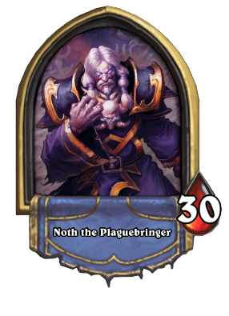
Normal
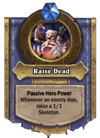
Heroic
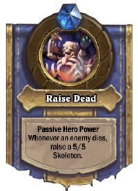
Heigan the Unclean
Observe, Heigan the Unclean. The mastermind behind the plague cauldrons that turned the wilderness of Azeroth into the Plaguelands. It is said that Heigan has rigged the very walls and floors of Naxxramas itself with a vast array of traps, which he can trigger at will.
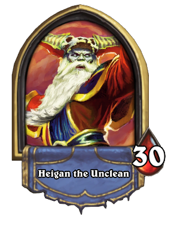
Normal
Heroic
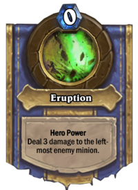
Loatheb
Loatheb. The hideous result of fusing the living plague of the Plaguelands with the bog beasts of Azeroth, Loatheb is said to control the power of healing itself.
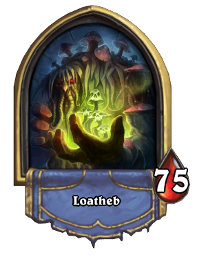
Normal

Heroic

Military Quarter
Instructor Razuvious
Instructor Razuvious is the trainer of the Death Knights, the fiercest and most loyal of the Lich King’s servants. His strikes are sure and deadly, and it is rumored that only students under his tutelage can withstand even a single blow of his deadly runeblade. It is said that his own technique is so potent, only a disciple of his could possibly withstand his might.
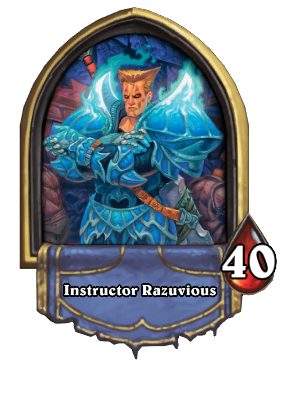
Normal

Heroic
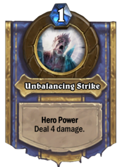
Gothik the Harvester
Gothik the Harvester, master of necromancy, teaches young Death Knights the power of summoning the undead to their aid. Even the most novice Death Knight can call the lifeless from their graves, thanks to Gothik’s dark and sinister techniques. Ghosts, ghouls, skeletons—none are safe from Gothik’s influence.
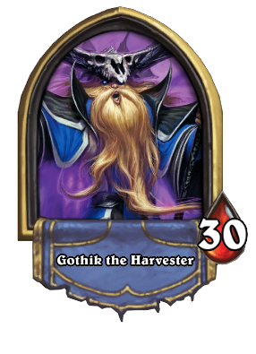
Normal
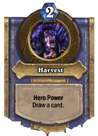
Heroic

The Four Horsemen
Kel’Thuzad’s royal guard can be found in the Four Horsemen, each with their own twisted powers at their disposal: Lady Blameaux is a master of the shadow, able to drain the essence of life from those she encounters; Thane Korth’azz controls the destructive power of fire, and can even call forth fiery meteors from the skies; Sir Zeliek was once a paladin, so powerful in life that he can still wield the Light in death; and Baron Rivendare, once a friend of Kel'Thuzad, now continues to serve his old comrade in death with his corrupting powers and skeletal Deathcharger.
Normal
Heroic
Lady Blaumeux


Thane Korth'azz
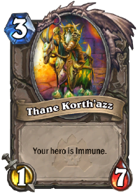

Sir Zeliek

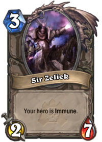
Construct Quarter
Patchwerk
Patchwerk is one of Kel'Thuzad’s most powerful abominations—his strength and speed come as a shock to those that may face him in combat. Far from a sluggish, mindless undead, Patchwerk uses his immense power to pulverize any tiny meat thing that may face him with a flurry of potent, powerful attacks. He just wants to play!
Normal and Heroic
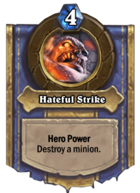
Normal
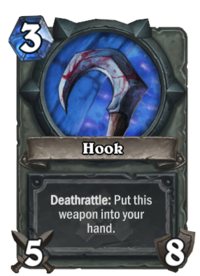
Heroic

Grobbulus
Grobbulus lurks deeper in the Construct Quarter, carrying the same ooze that flows through Naxxramas within its hulking form. Grobbulus is a flesh giant, the first successful one of its kind, created to build a formidable army capable of quickly spreading the undead plague. One of Grobbulus’ limbs has been replaced with a syringe, which it uses to inject the plague slime of Naxxramas into its enemies.
Normal

Heroic
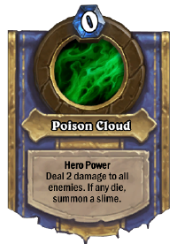
Gluth
The undead plague-dog Gluth sits obediently within Naxxramas, awaiting orders from his masters. No doggie biscuit can satisfy Gluth’s ravenous hunger. It is rumored that Gluth can easily devour an army of undead on a daily basis, which Gluth uses to knit his own decaying flesh back together.
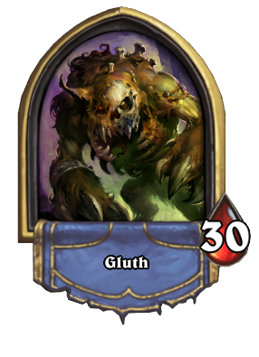
Normal

Heroic
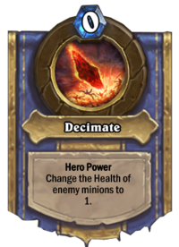
Thaddius
The final hulking horror that stands within the Construct Quarter is Thaddius. Pieced together from the flesh of the innocent, this massive abomination dwells in one of Naxxramas’ experimental laboratories, flanked by two huge wights—Stalagg and Feugen. Powerful bolts of electricity arc through the laboratory, supercharging Thaddius and his wight minions.
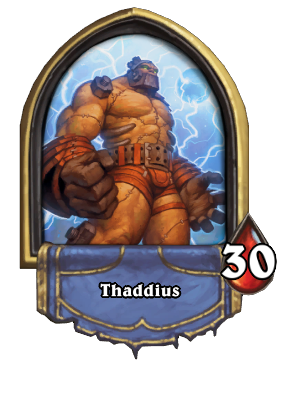
Normal and Heroic
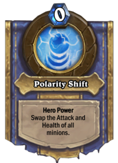
Frostwyrm Lair
Sapphiron
Once one of Malygos’ blue dragonflight, Sapphiron was slain by Arthas Menethil and raised from the dead to guard Kel'Thuzad for all of eternity. Like many of the blue dragonflight, Sapphiron had immense magical power, which was only magnified by the fact that the Lich King personally resurrected him to serve the Scourge. The chill of frost is at his command, and he uses his magic to defend Kel'Thuzad at all costs.
Normal and Heroic
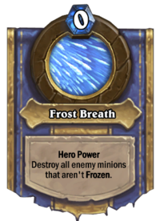
Kel'Thuzad
The Lich King sought out Azeroth’s most powerful and ambitious individuals to bend to his will, sending out a mental summons to those he thought could easily be swayed by the promise of power. Kel’Thuzad was the first to answer the Lich King’s call. He saw the power the Lich King held over the undead and desired such power for his own, so he offered his services as a mage to the Lich King in whatever manner he desired.
"As my lieutenant, you will gain knowledge and magic to surpass your most ambitious dreams. But in return, living or dead, you will serve me for the rest of your days. If you betray me, I shall make you into one of my mindless ones, and you will serve me still.”
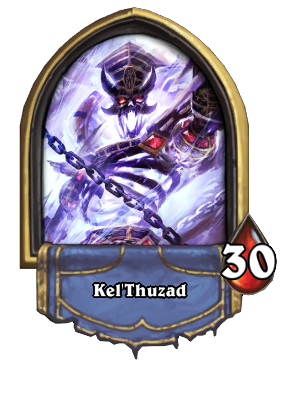
Normal
Heroic
Phase 1


Phase 2
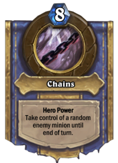